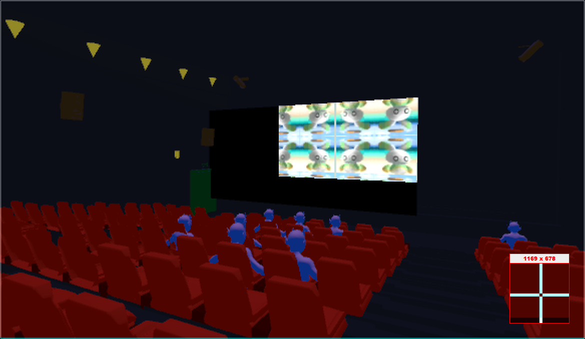

CSS 552 - Topics in Rendering
This course studies the algorithms and technologies involved in synthesizing high quality three dimensional images in real-time. The course covers the foundational mathematics required, examines the programming model of modern graphics processing unit (GPU), studies algorithms, for and how these algorithms are being mapped onto the modern GPU for real-time effect rendering. Topics covered include: GPU architecture, coordinate transformation pipeline, vertex and fragment shaders, illumination models, texture sampling and synthesis, forward- and deferred-rendering, multi-pass rendering, and post-rendering processing. After this course, students will understand the approaches to model and approximate real world physical elements for synthesizing imageries, including: light sources, materials, and illumination computation, and be able to implementing such models on modern GPUs.
This is what we did in Winter 2023.
1. Warmed up to tools (Unity)
Worked on sinusoidal modulation in the Vertex Shader.
2. Analyzed coordinate systems
Defined vanishing points in different coordinate systems.
3. Studied the classical Phong illumination model:
Implemented and supported four point, directional, and spot lights with distance and angular attenuation.
4. Learned multi-pass rendering:
Supported projected shadow for each light source type.
5. Worked with post-processing:
Designed Fog and Torch shaders.
This is Parker Ford's implementation:
6. Worked with file texture mappings:
Build projected texture mapping for geometries without UV defined.
This is Parker Ford's implementation:

7. Combined multi-pass and post-process:
Support shadow map and planar mirror.
This is Parker Ford's implementation: